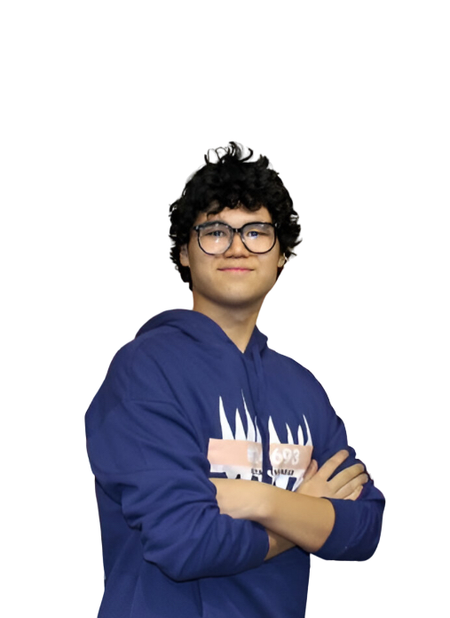
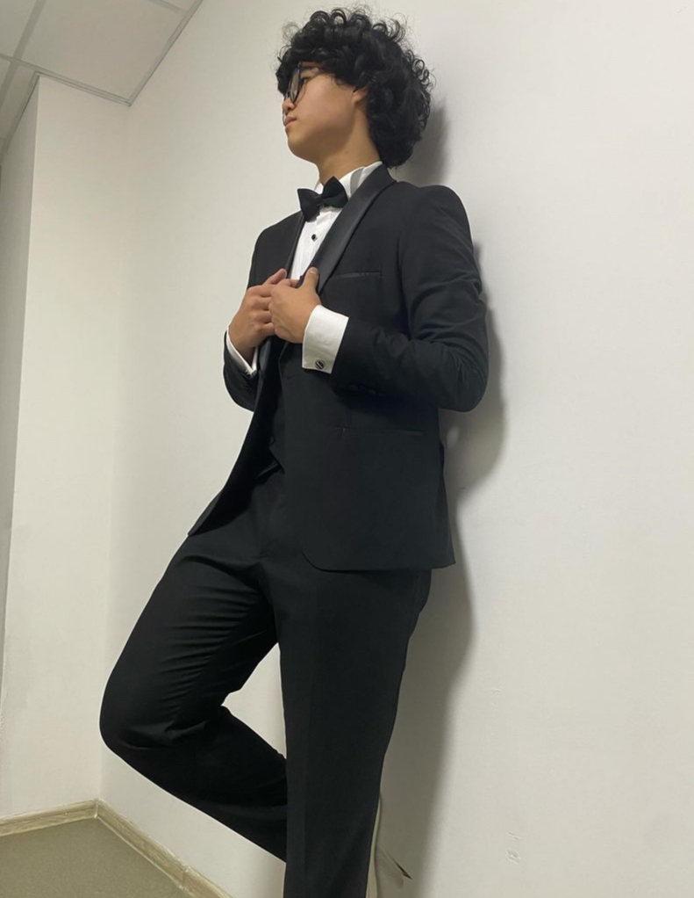

About Me
Hey everyone! I'm Kuzek Aldiyar, a 15-year-old student at NSPM School. I'm super passionate about tech and robots, always exploring the amazing things they can do. When I'm not coding or building bots, you'll find me shooting hoops or kicking a ball on the field, where I love to play and learn teamwork. I'm also learning German, hoping to connect with people worldwide.

But it's not all about work and study. I have a soft spot for dancing, especially when I listen to Pop Music.
With a heart full of dreams and a mind brimming with ideas, I'm on a mission to become an engineer and leave a positive mark on the world. Join me on this exciting journey!

Exploring Robotics

Preparing to join "Sigma 2023" International Competition